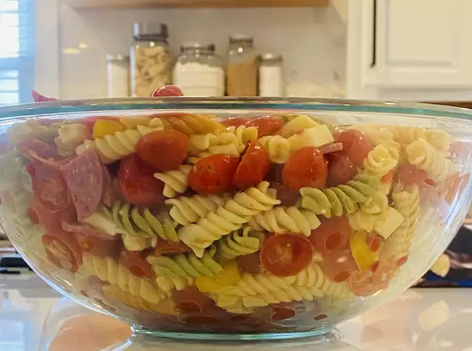

Awesome Pasta Salad

Description
This pasta salad consists of pepperoni, tomatoes, and provolone cheese. Not much but will give a lasting taste to enjoy!
Ingredients
- 1 (16 ounce) package fusilli (spiral) pasta
- 3 cups cherry tomatoes, halved
- ½ pound provolone cheese, cubed
- ½ pound salami, cubed
- ¼ pound sliced pepperoni, cut in half
- 1 large green bell pepper, cut into 1 inch pieces
- 1 (10 ounce) can black olives, drained
- 1 (4 ounce) jar pimentos, drained
- 1 (8 ounce) bottle Italian salad dressing
Directions
- Make sure you have all the necessary ingredients.
-
Bring a large pot of lightly salted water to a boil. Cook fusilli in the boiling water, stirring occasionally, until tender yet firm to the bite, about 12 minutes. Drain.
-
Combine fusilli with tomatoes, cheese, salami, pepperoni, green pepper, olives, and pimentos in a large bowl. Pour in salad dressing; toss to coat.
-
Finally, enjoy the awesome pasta salad!
Back Home
Credit to Irlandes for the recipe.